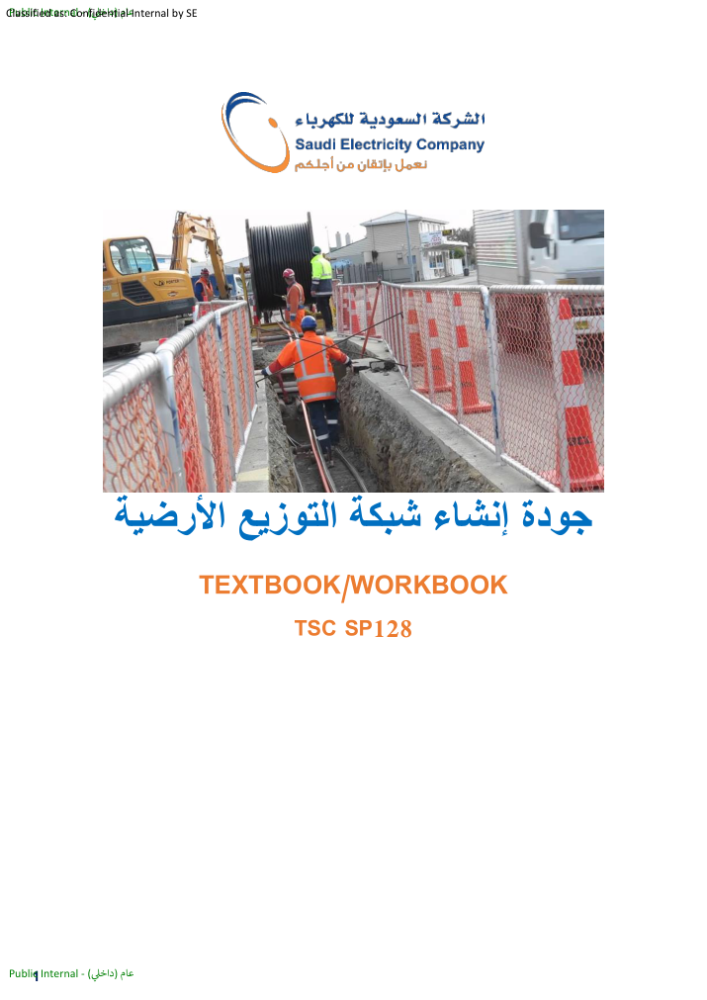

المصدر الأصلي محفوظ
ملف PDF نفسه داخل المشروع لضمان بقاء الصور والرسومات والجداول كما هي.
منصة ويب عربية RTL تربط المحتوى الأصلي للكتاب بالدروس والجداول والبحث والتقارير ومحاكاة AR + VR + MR.

تُحمّل هذه البطاقات ديناميكيًا من ملفات JSON.
ملف PDF نفسه داخل المشروع لضمان بقاء الصور والرسومات والجداول كما هي.
CSS Grid، Flexbox، CSS Variables، ES Modules، JSON، LocalStorage، WebXR وThree.js مع بدائل ثلاثية الأبعاد.